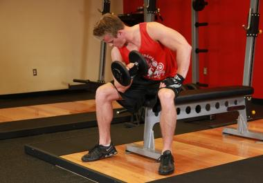
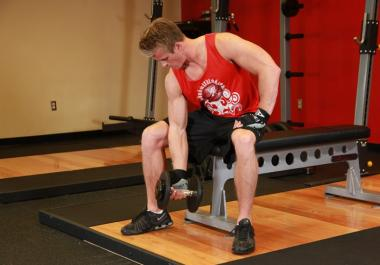

Концентрированные сгибания на бицепс

1

2
What to do ?
- Сядьте на край скамьи, раставив ноги так, чтобы руки свободно могли выполнять подъем гантели
- Исходное положение: Правой рукой возьмите ганель нейтральным хватом, упираясь локтем в верхнюю область бедра.Ладони должны смотреть от Вас, а руки выпрямлены.
- На выходе - сделайте подъем гантели на бицепс, работая исключительно предплечьем